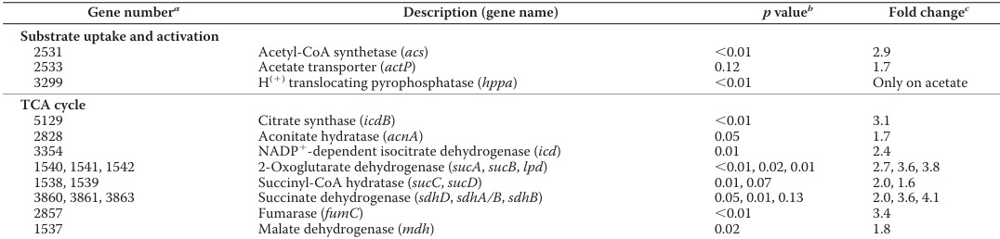
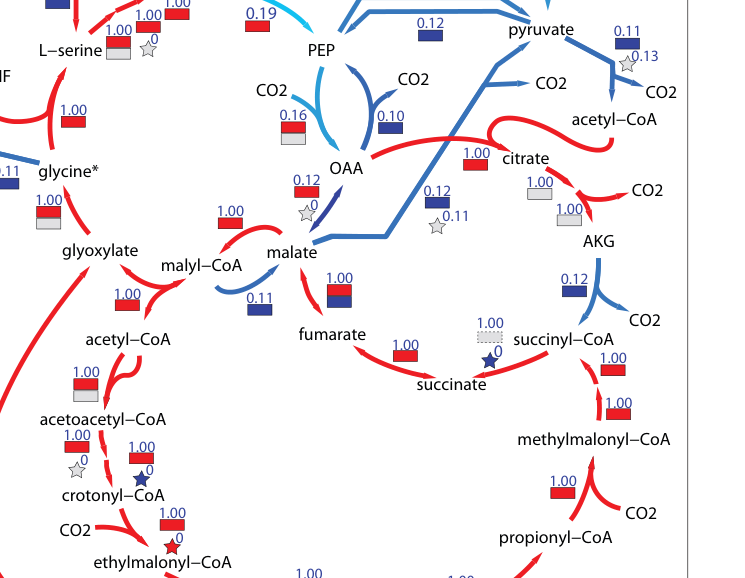

fumC encodes fumarate hydratase class II (EC 4.2.1.2), also known as fumarase C, an iron-independent enzyme that catalyzes the stereospecific and reversible hydration of fumarate to (S)-malate (L-malate) in the tricarboxylic acid (TCA) cycle. This is step 1/1 in the conversion of fumarate to malate, a critical reaction in central carbon metabolism. The enzyme belongs to the class-II fumarase/aspartase family and functions as a homotetramer in the cytoplasm. Unlike class I fumarases (FumA/FumB), fumC is iron-independent and represents the aerobic fumarase form. In methylotrophs, FumC plays an important role in the TCA cycle when carbon flows from C1 compounds through the serine cycle and glycolysis into acetyl-CoA, which is then oxidized via the TCA cycle. The enzyme has two substrate-binding sites: the catalytic A site and a non-catalytic B site that may function in substrate/product transfer or allosteric regulation. The reversible nature of the reaction allows FumC to function in both the oxidative (fumarate → malate) and reductive (malate → fumarate) directions of the TCA cycle, depending on metabolic needs. FumC is essential for both energy production through complete oxidation of acetyl-CoA and for generating biosynthetic precursors from TCA cycle intermediates.
| GO Term | Evidence | Action | Reason |
|---|---|---|---|
|
GO:0003824
catalytic activity
|
IEA
GO_REF:0000002 |
KEEP AS NON CORE |
Summary: This is an extremely general parent term for all enzymes. While technically correct, the specific term GO:0004333 (fumarate hydratase activity) provides precise functional annotation.
|
|
GO:0004333
fumarate hydratase activity
|
IEA
GO_REF:0000120 |
ACCEPT |
Summary: This is the primary and specific catalytic activity of FumC - the stereospecific and reversible hydration of fumarate to (S)-malate. This is a critical TCA cycle reaction. The class II fumarase assignment (EC 4.2.1.2) is corroborated by falcon deep research, and homolog biochemistry shows FumC has high activity in both directions (fumarate hydration and malate dehydration), supporting a bidirectional catalytic role. [file:METEA/fumC/fumC-uniprot.txt, "Fumarate hydratase"; "(S)-malate = fumarate + H2O"]
Supporting Evidence:
file:METEA/fumC/fumC-deep-research-falcon.md
class II fumarate hydratase (fumarase C; EC 4.2.1.2)...catalyzing the reversible interconversion of fumarate and (S)-malate
file:METEA/fumC/fumC-deep-research-falcon.md
high activity in both directions with similar specific activities for fumarate hydration and malate dehydration
|
|
GO:0005737
cytoplasm
|
IEA
GO_REF:0000120 |
ACCEPT |
Summary: FumC is a cytoplasmic enzyme that functions as a homotetramer in the TCA cycle. This is the primary cellular location for the enzyme. No AM1-specific experimental localization was retrieved by falcon deep research, but class II fumarase is canonically a soluble/cytosolic TCA-cycle enzyme, consistent with this UniRule-based annotation. [file:METEA/fumC/fumC-uniprot.txt, "Cytoplasm"]
Supporting Evidence:
file:METEA/fumC/fumC-deep-research-falcon.md
soluble/cytosolic
|
|
GO:0006099
tricarboxylic acid cycle
|
IEA
GO_REF:0000120 |
ACCEPT |
Summary: FumC is involved in the TCA cycle, catalyzing the reversible hydration of fumarate to L-malate. This is step 1/1 in the conversion of fumarate to malate. AM1-specific proteomics (Schneider et al. 2012) assigns fumarase (fumC, gene 2857 = locus MexAM1_META1p2857 / Q8KTE1) to the TCA cycle and shows it is 3.4-fold more abundant on acetate than on methanol (p=0.01); flux analysis shows ~68% of acetyl-CoA enters the TCA cycle on acetate with 98% oxidized to CO2, giving direct organism-specific support for the TCA-cycle role of fumC. [file:METEA/fumC/fumC-uniprot.txt, "Involved in the TCA cycle"; "Carbohydrate metabolism; tricarboxylic acid cycle; (S)-malate from fumarate: step 1/1"]
Supporting Evidence:
file:METEA/fumC/fumC-deep-research-falcon.md
more abundant on acetate than on methanol
file:METEA/fumC/fumC-deep-research-falcon.md
about **68%** of acetyl-CoA enters the **TCA cycle**
|
|
GO:0006106
fumarate metabolic process
|
IEA
GO_REF:0000120 |
ACCEPT |
Summary: FumC directly metabolizes fumarate by catalyzing its hydration to malate. This is the primary substrate for this enzyme. Falcon deep research confirms the reversible interconversion of fumarate and (S)-malate as the core reaction. [file:METEA/fumC/fumC-uniprot.txt, "Catalyzes the stereospecific interconversion of fumarate to L-malate"]
Supporting Evidence:
file:METEA/fumC/fumC-deep-research-falcon.md
class II fumarate hydratase (fumarase C; EC 4.2.1.2)...catalyzing the reversible interconversion of fumarate and (S)-malate
|
|
GO:0006108
malate metabolic process
|
IEA
GO_REF:0000118 |
ACCEPT |
Summary: FumC directly produces (S)-malate from fumarate, and can also convert malate back to fumarate in the reverse reaction. Malate metabolism is a core function of this enzyme. Homolog biochemistry cited by falcon deep research shows class II FumC has similar specific activities for fumarate hydration and malate dehydration, confirming the bidirectional (malate-producing and malate-consuming) role. [file:METEA/fumC/fumC-uniprot.txt, "(S)-malate = fumarate + H2O"]
Supporting Evidence:
file:METEA/fumC/fumC-deep-research-falcon.md
high activity in both directions with similar specific activities for fumarate hydration and malate dehydration
|
|
GO:0016829
lyase activity
|
IEA
GO_REF:0000120 |
KEEP AS NON CORE |
Summary: This accurately describes the enzymatic mechanism - FumC is a lyase that catalyzes the elimination of water from malate to form fumarate (or the reverse hydration reaction). The enzyme belongs to the fumarate lyase family. However, lyase activity is a high-level grouping ancestor of the specific and core molecular function GO:0004333 (fumarate hydratase activity), which is also annotated; this general term is therefore retained as non-core. Falcon deep research confirms the class II fumarase reaction. [file:METEA/fumC/fumC-uniprot.txt, "Fumarate lyase family"]
Supporting Evidence:
file:METEA/fumC/fumC-deep-research-falcon.md
class II fumarate hydratase (fumarase C; EC 4.2.1.2)...catalyzing the reversible interconversion of fumarate and (S)-malate
|
The research report should be a detailed narrative explaining the function, biological processes, and localization of the gene product. Citations should be given for all claims.
You should prioritize authoritative reviews and primary scientific literature when conducting research. You can supplement
this with annotations you find in gene/protein databases, but these can be outdated or inaccurate.
We are specifically interested in the primary function of the gene - for enzymes, what reaction is catalyzed, and what is the substrate specificity? For transporters, what is the substrate? For structural proteins or adapters, what is the broader structural role? For signaling molecules, what is the role in the pathway.
We are interested in where in or outside the cell the gene product carries out its function.
We are also interested in the signaling or biochemical pathways in which the gene functions. We are less interested in broad pleiotropic effects, except where these elucidate the precise role.
Include evidence where possible. We are interested in both experimental evidence as well as inference from structure, evolution, or bioinformatic analysis. Precise studies should be prioritized over high-throughput, where available.
The target protein (UniProt Q8KTE1; gene fumC, locus MexAM1_META1p2857) is a class II fumarate hydratase (fumarase C; EC 4.2.1.2), a core tricarboxylic acid (TCA) cycle enzyme catalyzing the reversible interconversion of fumarate and (S)-malate. AM1-specific evidence places fumC (gene number 2857) in the TCA cycle and shows it is more abundant on acetate than on methanol (3.4-fold; p=0.01), consistent with stronger operation of the oxidative TCA cycle during growth on multicarbon substrates. (schneider2012theethylmalonylcoapathway pages 4-4, schneider2012theethylmalonylcoapathway media 593b7091)
Beyond AM1, a recent (2023) methylotroph study provides high-confidence biochemical/kinetic evidence for bacterial class II FumC enzymes: tetrameric architecture (≈184 kDa native; ~50 kDa subunits), oxygen tolerance, and low-micromolar-to-sub-millimolar substrate affinity for fumarate/malate, supporting UniProt’s “aerobic/iron-independent” class II assignment. (melnikov2023interchangeabilityofclass pages 9-10, melnikov2023interchangeabilityofclass pages 6-9)
Organism and gene match. In Methylobacterium/Methylorubrum extorquens AM1, a comparative proteomics dataset explicitly annotates a TCA-cycle “Fumarase (fumC)” with gene number 2857 and quantifies its condition-dependent abundance. (schneider2012theethylmalonylcoapathway pages 4-4)
Ambiguity note. The symbol fumC is widely used across bacteria for class II fumarase genes; thus, organism context is essential. In the retrieved AM1-specific evidence, the identity is consistent with the UniProt-provided mapping to locus 2857. (schneider2012theethylmalonylcoapathway pages 4-4)
Fumarase (EC 4.2.1.2) catalyzes the reversible hydration of fumarate to (S)-malate (and the reverse dehydration), a canonical step of the TCA cycle that connects succinate oxidation (via succinate dehydrogenase → fumarate) to malate/oxaloacetate regeneration. (melnikov2023interchangeabilityofclass pages 1-2, melnikov2023interchangeabilityofclass pages 9-10)
Bacteria can encode two non-homologous fumarase families:
- Class I fumarases are often [4Fe-4S] cluster enzymes and can be oxygen-sensitive in many organisms.
- Class II (FumC) fumarases are typically oxygen-tolerant, tetrameric enzymes composed of ~50 kDa subunits, and show strong specificity for the fumarate/malate pair.
These distinctions are directly described in a 2023 study of a methylotroph that carries both types. (melnikov2023interchangeabilityofclass pages 1-2, melnikov2023interchangeabilityofclass pages 4-6)
For class II FumC, the supported primary reaction is:
Fumarate + H2O ⇌ (S)-malate (EC 4.2.1.2). (melnikov2023interchangeabilityofclass pages 1-2, melnikov2023interchangeabilityofclass pages 9-10)
In a 2023 biochemical characterization of a methylotroph class II fumarase, FumC showed high activity in both directions with similar specific activities for fumarate hydration and malate dehydration, supporting the expected bidirectional catalytic role. (melnikov2023interchangeabilityofclass pages 9-10)
A methylotroph class II FumC enzyme (purified recombinant protein) showed (assay-dependent) properties including:
- Specific activities ~45 ± 1 U mg⁻¹ (fumarate hydration) and ~42 ± 3 U mg⁻¹ (malate dehydration). (melnikov2023interchangeabilityofclass pages 9-10)
- Km(fumarate) = 0.10 ± 0.001 mM and S0.5(malate) = 0.14 ± 0.01 mM (Hill coefficient ~2.1). (melnikov2023interchangeabilityofclass pages 9-10)
- pH dependence with maximal fumarate hydration near pH 8.0 and malate dehydration near pH 8.5. (melnikov2023interchangeabilityofclass pages 9-10)
While these values are not from AM1 Q8KTE1 directly, they provide current, experimentally measured constraints that are consistent with the UniProt class II fumarase assignment and typical bacterial TCA function. (melnikov2023interchangeabilityofclass pages 9-10)
A recent methylotroph study reports class II fumarase as a tetramer (native ≈184 kDa) with ~50 kDa subunits, “similar to previously characterized class II fumarases.” (melnikov2023interchangeabilityofclass pages 6-9)
Class II fumarases are described as oxygen-tolerant and are contrasted with class I fumarases that contain an Fe–S cluster (supporting the inference that class II enzymes are iron-independent in the sense of not requiring an O2-labile Fe–S catalytic cluster). (melnikov2023interchangeabilityofclass pages 1-2, melnikov2023interchangeabilityofclass pages 4-6)
Genome-scale reconstruction and fluxomics describe AM1 core metabolism as an unusual, tightly interlaced network of large cycles, explicitly including the serine cycle, ethylmalonyl-CoA pathway (EMCP), and the TCA cycle, which must operate together as an integrated process to achieve C1 assimilation. (peyraud2011genomescalereconstructionand pages 1-2, peyraud2011genomescalereconstructionand pages 14-16)
A flux map figure (cropped) shows fumarate, succinate, and malate nodes embedded in this central network during methanol growth, consistent with fumarase being part of the core connected metabolic backbone. (peyraud2011genomescalereconstructionand media 7badf0fd)
During methylotrophic growth of AM1, the TCA cycle is described as not fully operational, with no flux through 2-oxoglutarate dehydrogenase observed; instead, the EMCP supplies glyoxylate needed for the serine cycle. (schneider2012theethylmalonylcoapathway pages 1-3)
This provides important context: fumarase is still a TCA-node enzyme, but overall carbon oxidation and carbon assimilation are distributed across interconnected cycles rather than a single “textbook” complete TCA loop under methanol growth. (peyraud2011genomescalereconstructionand pages 1-2, schneider2012theethylmalonylcoapathway pages 1-3)
On acetate, AM1 shows proteomic and flux evidence consistent with stronger oxidative TCA operation:
- fumC (gene 2857) protein abundance is 3.4-fold higher on acetate vs methanol (p=0.01), directly supporting condition-dependent upregulation. (schneider2012theethylmalonylcoapathway pages 4-4, schneider2012theethylmalonylcoapathway media 593b7091)
- Flux analysis indicates that during acetate growth, about 68% of acetyl-CoA enters the TCA cycle and 98% of that TCA-entering acetyl-CoA is oxidized completely to CO2, consistent with a catabolic/energy-generating role for the TCA (and thus for fumarase) on acetate. (schneider2012theethylmalonylcoapathway pages 5-7)
No AM1-specific experimental localization (e.g., fractionation, microscopy, tags) for Q8KTE1 was retrieved from the available full texts. The evidence base supports Q8KTE1 as a canonical class II fumarase operating in central carbon metabolism, which in bacteria is typically a soluble/cytosolic enzyme associated with the TCA cycle. This localization inference should be treated as provisional until validated experimentally in AM1. (schneider2012theethylmalonylcoapathway pages 4-4, peyraud2011genomescalereconstructionand pages 1-2)
A 2023 study in an obligate methanotroph provides updated biochemical and physiological understanding of fumarase redundancy:
- Class II FumC is tetrameric and catalyzes fumarate↔malate with kinetic constants measured (see above). (melnikov2023interchangeabilityofclass pages 9-10, melnikov2023interchangeabilityofclass pages 6-9)
- Genetic evidence shows class I and class II fumarases can be functionally interchangeable in vivo; deleting both fumarases (with malic enzyme deficiency) leads to substantial extracellular fumarate accumulation (2.6 mmol g⁻¹ DCW on methane; 1.1 mmol g⁻¹ DCW on methanol), illustrating expected physiological effects of disabling this TCA node. (melnikov2023interchangeabilityofclass pages 1-2, melnikov2023interchangeabilityofclass pages 2-4)
Although not performed in AM1, this strengthens the current consensus that fumarase is a robust, sometimes redundant metabolic node in methylotroph central metabolism and informs expectations for AM1 perturbation phenotypes. (melnikov2023interchangeabilityofclass pages 12-13)
A 2024 Nature Communications study describes evolution/engineering in AM1 under low methanol that yielded a PRPP synthetase “metabolic valve”. This valve redirects limited carbon away from PRPP/nucleotide synthesis toward alternative central routes (including an upregulated phosphoketolase pathway), improving methanol-limited growth and plant-associated fitness. (zhang2024phosphoribosylpyrophosphatesynthetaseas pages 1-2, zhang2024phosphoribosylpyrophosphatesynthetaseas pages 2-3)
While fumarase is not singled out, this paper represents a recent authoritative example of how central carbon network constraints (in which the TCA cycle is embedded) can be leveraged for improved real-world phenotypes (phyllosphere colonization/plant growth promotion). (zhang2024phosphoribosylpyrophosphatesynthetaseas pages 10-11)
A recent review describes the development of methylotrophic microbial platforms for methanol-based bioindustry and cites engineered M. extorquens AM1 for chemical production (e.g., mevalonate titers mentioned in the review), indicating continued real-world momentum for AM1 as a production chassis whose performance depends on central metabolism and its TCA-linked nodes. (zhang2024phosphoribosylpyrophosphatesynthetaseas pages 9-10)
A 2022 applied study in M. extorquens highlights how production of EMCP-related dicarboxylic acids can be limited by reuptake and improved by transporter mutations; it reports quantitative yield changes including product decreases of 45–60% over 20 h due to reuptake and a 1.4-fold yield increase via transport deficiency (contextualizing why central metabolism—including TCA-linked intermediates—matters for strain engineering). (poschel2022improvementofdicarboxylic pages 1-3)
Systems-level analyses portray AM1 central metabolism as an integrated set of cycles (serine cycle, EMCP, TCA, anaplerosis) that must act together for methylotrophic growth, and that this structure is “structurally fragile” at the network level—an interpretation that frames fumC as part of an interconnected metabolic backbone rather than an isolated single-step enzyme. (peyraud2011genomescalereconstructionand pages 1-2, peyraud2011genomescalereconstructionand pages 14-16)
The following table consolidates direct AM1 evidence versus homolog-based inference.
| Claim/Topic | Key Findings | Organism/System | Evidence Type | Source (authors year journal) | URL | PaperQA citation ID |
|---|---|---|---|---|---|---|
| Identity | In Methylorubrum extorquens AM1, fumarase annotated as fumC is assigned to gene number 2857, matching the UniProt locus MexAM1_META1p2857 / Q8KTE1; proteomics places it in the TCA cycle and shows higher abundance on acetate versus methanol (fold change 3.4, p = 0.01). | Methylobacterium/Methylorubrum extorquens AM1 | Proteomics | Schneider et al. 2012, Journal of Biological Chemistry | https://doi.org/10.1074/jbc.M111.305219 | (schneider2012theethylmalonylcoapathway pages 4-4, schneider2012theethylmalonylcoapathway media 593b7091) |
| Reaction | Fumarase/fumarate hydratase (EC 4.2.1.2) catalyzes the reversible hydration of fumarate to (S)-malate; this supports annotation of Q8KTE1 as a class II fumarase. | Bacterial class II fumarase; methylotroph comparator | Biochemistry | Melnikov et al. 2023, PLOS ONE | https://doi.org/10.1371/journal.pone.0289976 | (melnikov2023interchangeabilityofclass pages 1-2, melnikov2023interchangeabilityofclass pages 9-10) |
| Structure/cofactor | Class II fumarase (FumC) is described as a tetramer of ~50 kDa subunits, oxygen-tolerant, and contrasted with class I fumarases that carry an oxygen-sensitive [4Fe-4S] cluster; this supports the UniProt description “iron-independent fumarase.” | Methylotuvimicrobium alcaliphilum 20Z and general bacterial FumC context | Biochemistry / comparative enzymology | Melnikov et al. 2023, PLOS ONE | https://doi.org/10.1371/journal.pone.0289976 | (melnikov2023interchangeabilityofclass pages 1-2, melnikov2023interchangeabilityofclass pages 10-12, melnikov2023interchangeabilityofclass pages 4-6) |
| Kinetics / substrate specificity | Purified class II FumC showed similar activities in both directions: about 45 ± 1 U mg⁻¹ for fumarate hydration and 42 ± 3 U mg⁻¹ for malate dehydration; Km(fumarate) = 0.10 ± 0.001 mM, S0.5(malate) = 0.14 ± 0.01 mM; optimal pH near 8.0–8.5; no mesaconate use reported for this FumC. | Methylotuvimicrobium alcaliphilum 20Z | Biochemistry / enzyme kinetics | Melnikov et al. 2023, PLOS ONE | https://doi.org/10.1371/journal.pone.0289976 | (melnikov2023interchangeabilityofclass pages 9-10) |
| Regulation / expression in AM1 | During acetate growth, AM1 expresses the full TCA complement, with most TCA enzymes more abundant than on methanol; fumC specifically increases 3.4-fold on acetate, consistent with stronger oxidative TCA-cycle engagement under non-methylotrophic growth. | Methylobacterium/Methylorubrum extorquens AM1 | Proteomics | Schneider et al. 2012, Journal of Biological Chemistry | https://doi.org/10.1074/jbc.M111.305219 | (schneider2012theethylmalonylcoapathway pages 4-4, schneider2012theethylmalonylcoapathway media 593b7091, schneider2012theethylmalonylcoapathway pages 4-5) |
| Pathway context in methylotrophy | AM1 central metabolism has an unusual topology in which the serine cycle, ethylmalonyl-CoA pathway (EMCP), TCA cycle, and anaplerotic reactions function as an integrated network for C1 assimilation; fumarase is therefore best interpreted as a TCA-cycle node embedded in methylotrophic core metabolism rather than an isolated enzyme. | Methylobacterium/Methylorubrum extorquens AM1 | Genome-scale reconstruction / ^13C flux analysis | Peyraud et al. 2011, BMC Systems Biology | https://doi.org/10.1186/1752-0509-5-189 | (peyraud2011genomescalereconstructionand pages 1-2, peyraud2011genomescalereconstructionand pages 7-8, peyraud2011genomescalereconstructionand pages 14-16) |
| Pathway context in methanol growth | Under methylotrophic growth, the TCA cycle is not fully operational in AM1 because no flux through 2-oxoglutarate dehydrogenase was observed; glyoxylate is instead regenerated by the EMCP to support the serine cycle, explaining why fumC is present in core metabolism but appears less induced than during acetate growth. | Methylobacterium/Methylorubrum extorquens AM1 | ^13C flux analysis / comparative physiology | Schneider et al. 2012, Journal of Biological Chemistry | https://doi.org/10.1074/jbc.M111.305219 | (schneider2012theethylmalonylcoapathway pages 1-3, peyraud2011genomescalereconstructionand pages 12-13) |
| Pathway context in acetate growth | On acetate, about 68% of acetyl-CoA enters the TCA cycle and 98% of that flux is oxidized to CO2; the EMCP is a second major sink (21% of acetyl-CoA). This strongly supports a catabolic role for fumarase/fumC in oxidative carbon metabolism during acetate utilization. | Methylobacterium/Methylorubrum extorquens AM1 | ^13C flux analysis / proteomics | Schneider et al. 2012, Journal of Biological Chemistry | https://doi.org/10.1074/jbc.M111.305219 | (schneider2012theethylmalonylcoapathway pages 4-5, schneider2012theethylmalonylcoapathway pages 5-7) |
| Genetic/physiological support for fumarase function | In a methylotroph with both class I and II fumarases, the enzymes were functionally interchangeable in vivo; deleting both fumarases (with malic enzyme lesion) caused strong fumarate accumulation (2.6 mmol g⁻¹ DCW on methane; 1.1 mmol g⁻¹ DCW on methanol), illustrating the expected physiological consequence of fumarase loss. | Methylotuvimicrobium alcaliphilum 20Z | Genetics / physiology / biochemistry | Melnikov et al. 2023, PLOS ONE | https://doi.org/10.1371/journal.pone.0289976 | (melnikov2023interchangeabilityofclass pages 1-2, melnikov2023interchangeabilityofclass pages 12-13, melnikov2023interchangeabilityofclass pages 2-4) |
| Biotechnology relevance | AM1 is widely used as a methanol-based production chassis, and multiple recent studies emphasize that engineering outcomes depend on central carbon metabolism (serine cycle, EMCP, TCA-linked acetyl-CoA handling). While fumC itself is not a common direct engineering target, its pathway position makes it relevant for interpreting redox balance and carbon partitioning in production strains. | Methylorubrum extorquens AM1 and derived strains | Review / metabolic engineering context | Singh et al. 2022, Frontiers in Bioengineering and Biotechnology; Zhang et al. 2024, Nature Communications | https://doi.org/10.3389/fbioe.2022.1050740 ; https://doi.org/10.1038/s41467-024-50342-9 | (zhang2024phosphoribosylpyrophosphatesynthetaseas pages 9-10, zhang2024phosphoribosylpyrophosphatesynthetaseas pages 1-2, zhang2024phosphoribosylpyrophosphatesynthetaseas pages 2-3, zhang2024phosphoribosylpyrophosphatesynthetaseas pages 10-11) |
| Annotation confidence / limitations | Direct biochemical characterization for AM1 Q8KTE1 itself was not retrieved; therefore, the strongest AM1-specific evidence is proteomic and systems-level, while catalytic mechanism, tetrameric class-II architecture, and iron-independent interpretation are inferred from well-characterized bacterial FumC homologs plus the UniProt/domain assignment. | AM1 plus bacterial FumC homologs | Integrated annotation inference | Schneider et al. 2012, Peyraud et al. 2011, Melnikov et al. 2023 | https://doi.org/10.1074/jbc.M111.305219 ; https://doi.org/10.1186/1752-0509-5-189 ; https://doi.org/10.1371/journal.pone.0289976 | (schneider2012theethylmalonylcoapathway pages 4-4, peyraud2011genomescalereconstructionand pages 1-2, melnikov2023interchangeabilityofclass pages 1-2) |
Table: This table compiles the strongest evidence relevant to functional annotation of fumC/Q8KTE1 in Methylorubrum extorquens AM1, combining AM1-specific proteomics and systems biology with homolog-based class II fumarase biochemistry. It is useful for separating direct organism-specific evidence from higher-confidence comparative inference.
Key limitation: No AM1-specific purified-enzyme kinetics, substrate range (beyond fumarate/malate), or experimental localization for UniProt Q8KTE1 were retrieved in the accessible corpus. Therefore, enzymatic constants and quaternary structure are currently supported by a close methylotroph homolog study rather than direct AM1 measurement. (melnikov2023interchangeabilityofclass pages 9-10, melnikov2023interchangeabilityofclass pages 6-9)
Recommended experiments for definitive functional annotation in AM1:
- Purify Q8KTE1 and measure kcat/Km for fumarate and (S)-malate under AM1-relevant conditions; test for any side activities (e.g., mesaconate) and allosteric effectors.
- Create ΔfumC and conditional knockdown strains in AM1 to test methylotrophic vs acetate-growth phenotypes, and quantify fumarate/malate pools.
- Determine subcellular localization via fluorescent tagging or fractionation.
References
(schneider2012theethylmalonylcoapathway pages 4-4): Kathrin Schneider, Rémi Peyraud, Patrick Kiefer, Philipp Christen, Nathanaël Delmotte, Stéphane Massou, Jean-Charles Portais, and Julia A. Vorholt. The ethylmalonyl-coa pathway is used in place of the glyoxylate cycle by methylobacterium extorquens am1 during growth on acetate. Journal of Biological Chemistry, 287:757-766, Jan 2012. URL: https://doi.org/10.1074/jbc.m111.305219, doi:10.1074/jbc.m111.305219. This article has 106 citations and is from a domain leading peer-reviewed journal.
(schneider2012theethylmalonylcoapathway media 593b7091): Kathrin Schneider, Rémi Peyraud, Patrick Kiefer, Philipp Christen, Nathanaël Delmotte, Stéphane Massou, Jean-Charles Portais, and Julia A. Vorholt. The ethylmalonyl-coa pathway is used in place of the glyoxylate cycle by methylobacterium extorquens am1 during growth on acetate. Journal of Biological Chemistry, 287:757-766, Jan 2012. URL: https://doi.org/10.1074/jbc.m111.305219, doi:10.1074/jbc.m111.305219. This article has 106 citations and is from a domain leading peer-reviewed journal.
(melnikov2023interchangeabilityofclass pages 9-10): Oleg I. Melnikov, Ildar I. Mustakhimov, Alexander S. Reshetnikov, Maxim V. Molchanov, Andrey V. Machulin, Valentina N. Khmelenina, and Olga N. Rozova. Interchangeability of class i and ii fumarases in an obligate methanotroph methylotuvimicrobium alcaliphilum 20z. PLOS ONE, 18:e0289976, Oct 2023. URL: https://doi.org/10.1371/journal.pone.0289976, doi:10.1371/journal.pone.0289976. This article has 4 citations and is from a peer-reviewed journal.
(melnikov2023interchangeabilityofclass pages 6-9): Oleg I. Melnikov, Ildar I. Mustakhimov, Alexander S. Reshetnikov, Maxim V. Molchanov, Andrey V. Machulin, Valentina N. Khmelenina, and Olga N. Rozova. Interchangeability of class i and ii fumarases in an obligate methanotroph methylotuvimicrobium alcaliphilum 20z. PLOS ONE, 18:e0289976, Oct 2023. URL: https://doi.org/10.1371/journal.pone.0289976, doi:10.1371/journal.pone.0289976. This article has 4 citations and is from a peer-reviewed journal.
(melnikov2023interchangeabilityofclass pages 1-2): Oleg I. Melnikov, Ildar I. Mustakhimov, Alexander S. Reshetnikov, Maxim V. Molchanov, Andrey V. Machulin, Valentina N. Khmelenina, and Olga N. Rozova. Interchangeability of class i and ii fumarases in an obligate methanotroph methylotuvimicrobium alcaliphilum 20z. PLOS ONE, 18:e0289976, Oct 2023. URL: https://doi.org/10.1371/journal.pone.0289976, doi:10.1371/journal.pone.0289976. This article has 4 citations and is from a peer-reviewed journal.
(melnikov2023interchangeabilityofclass pages 4-6): Oleg I. Melnikov, Ildar I. Mustakhimov, Alexander S. Reshetnikov, Maxim V. Molchanov, Andrey V. Machulin, Valentina N. Khmelenina, and Olga N. Rozova. Interchangeability of class i and ii fumarases in an obligate methanotroph methylotuvimicrobium alcaliphilum 20z. PLOS ONE, 18:e0289976, Oct 2023. URL: https://doi.org/10.1371/journal.pone.0289976, doi:10.1371/journal.pone.0289976. This article has 4 citations and is from a peer-reviewed journal.
(peyraud2011genomescalereconstructionand pages 1-2): Rémi Peyraud, Kathrin Schneider, Patrick Kiefer, Stéphane Massou, Julia A Vorholt, and Jean-Charles Portais. Genome-scale reconstruction and system level investigation of the metabolic network of methylobacterium extorquens am1. BMC Systems Biology, 5:189-189, Nov 2011. URL: https://doi.org/10.1186/1752-0509-5-189, doi:10.1186/1752-0509-5-189. This article has 165 citations and is from a peer-reviewed journal.
(peyraud2011genomescalereconstructionand pages 14-16): Rémi Peyraud, Kathrin Schneider, Patrick Kiefer, Stéphane Massou, Julia A Vorholt, and Jean-Charles Portais. Genome-scale reconstruction and system level investigation of the metabolic network of methylobacterium extorquens am1. BMC Systems Biology, 5:189-189, Nov 2011. URL: https://doi.org/10.1186/1752-0509-5-189, doi:10.1186/1752-0509-5-189. This article has 165 citations and is from a peer-reviewed journal.
(peyraud2011genomescalereconstructionand media 7badf0fd): Rémi Peyraud, Kathrin Schneider, Patrick Kiefer, Stéphane Massou, Julia A Vorholt, and Jean-Charles Portais. Genome-scale reconstruction and system level investigation of the metabolic network of methylobacterium extorquens am1. BMC Systems Biology, 5:189-189, Nov 2011. URL: https://doi.org/10.1186/1752-0509-5-189, doi:10.1186/1752-0509-5-189. This article has 165 citations and is from a peer-reviewed journal.
(schneider2012theethylmalonylcoapathway pages 1-3): Kathrin Schneider, Rémi Peyraud, Patrick Kiefer, Philipp Christen, Nathanaël Delmotte, Stéphane Massou, Jean-Charles Portais, and Julia A. Vorholt. The ethylmalonyl-coa pathway is used in place of the glyoxylate cycle by methylobacterium extorquens am1 during growth on acetate. Journal of Biological Chemistry, 287:757-766, Jan 2012. URL: https://doi.org/10.1074/jbc.m111.305219, doi:10.1074/jbc.m111.305219. This article has 106 citations and is from a domain leading peer-reviewed journal.
(schneider2012theethylmalonylcoapathway pages 5-7): Kathrin Schneider, Rémi Peyraud, Patrick Kiefer, Philipp Christen, Nathanaël Delmotte, Stéphane Massou, Jean-Charles Portais, and Julia A. Vorholt. The ethylmalonyl-coa pathway is used in place of the glyoxylate cycle by methylobacterium extorquens am1 during growth on acetate. Journal of Biological Chemistry, 287:757-766, Jan 2012. URL: https://doi.org/10.1074/jbc.m111.305219, doi:10.1074/jbc.m111.305219. This article has 106 citations and is from a domain leading peer-reviewed journal.
(melnikov2023interchangeabilityofclass pages 2-4): Oleg I. Melnikov, Ildar I. Mustakhimov, Alexander S. Reshetnikov, Maxim V. Molchanov, Andrey V. Machulin, Valentina N. Khmelenina, and Olga N. Rozova. Interchangeability of class i and ii fumarases in an obligate methanotroph methylotuvimicrobium alcaliphilum 20z. PLOS ONE, 18:e0289976, Oct 2023. URL: https://doi.org/10.1371/journal.pone.0289976, doi:10.1371/journal.pone.0289976. This article has 4 citations and is from a peer-reviewed journal.
(melnikov2023interchangeabilityofclass pages 12-13): Oleg I. Melnikov, Ildar I. Mustakhimov, Alexander S. Reshetnikov, Maxim V. Molchanov, Andrey V. Machulin, Valentina N. Khmelenina, and Olga N. Rozova. Interchangeability of class i and ii fumarases in an obligate methanotroph methylotuvimicrobium alcaliphilum 20z. PLOS ONE, 18:e0289976, Oct 2023. URL: https://doi.org/10.1371/journal.pone.0289976, doi:10.1371/journal.pone.0289976. This article has 4 citations and is from a peer-reviewed journal.
(zhang2024phosphoribosylpyrophosphatesynthetaseas pages 1-2): Cong Zhang, Di-Fei Zhou, Meng-Ying Wang, Ya-Zhen Song, Chong Zhang, Ming-Ming Zhang, Jing Sun, Lu Yao, Xu-Hua Mo, Zeng-Xin Ma, Xiao-Jie Yuan, Yi Shao, Hao-Ran Wang, Si-Han Dong, Kai Bao, Shu-Huan Lu, Martin Sadilek, Marina G. Kalyuzhnaya, Xin-Hui Xing, and Song Yang. Phosphoribosylpyrophosphate synthetase as a metabolic valve advances methylobacterium/methylorubrum phyllosphere colonization and plant growth. Nature Communications, Jul 2024. URL: https://doi.org/10.1038/s41467-024-50342-9, doi:10.1038/s41467-024-50342-9. This article has 30 citations and is from a highest quality peer-reviewed journal.
(zhang2024phosphoribosylpyrophosphatesynthetaseas pages 2-3): Cong Zhang, Di-Fei Zhou, Meng-Ying Wang, Ya-Zhen Song, Chong Zhang, Ming-Ming Zhang, Jing Sun, Lu Yao, Xu-Hua Mo, Zeng-Xin Ma, Xiao-Jie Yuan, Yi Shao, Hao-Ran Wang, Si-Han Dong, Kai Bao, Shu-Huan Lu, Martin Sadilek, Marina G. Kalyuzhnaya, Xin-Hui Xing, and Song Yang. Phosphoribosylpyrophosphate synthetase as a metabolic valve advances methylobacterium/methylorubrum phyllosphere colonization and plant growth. Nature Communications, Jul 2024. URL: https://doi.org/10.1038/s41467-024-50342-9, doi:10.1038/s41467-024-50342-9. This article has 30 citations and is from a highest quality peer-reviewed journal.
(zhang2024phosphoribosylpyrophosphatesynthetaseas pages 10-11): Cong Zhang, Di-Fei Zhou, Meng-Ying Wang, Ya-Zhen Song, Chong Zhang, Ming-Ming Zhang, Jing Sun, Lu Yao, Xu-Hua Mo, Zeng-Xin Ma, Xiao-Jie Yuan, Yi Shao, Hao-Ran Wang, Si-Han Dong, Kai Bao, Shu-Huan Lu, Martin Sadilek, Marina G. Kalyuzhnaya, Xin-Hui Xing, and Song Yang. Phosphoribosylpyrophosphate synthetase as a metabolic valve advances methylobacterium/methylorubrum phyllosphere colonization and plant growth. Nature Communications, Jul 2024. URL: https://doi.org/10.1038/s41467-024-50342-9, doi:10.1038/s41467-024-50342-9. This article has 30 citations and is from a highest quality peer-reviewed journal.
(zhang2024phosphoribosylpyrophosphatesynthetaseas pages 9-10): Cong Zhang, Di-Fei Zhou, Meng-Ying Wang, Ya-Zhen Song, Chong Zhang, Ming-Ming Zhang, Jing Sun, Lu Yao, Xu-Hua Mo, Zeng-Xin Ma, Xiao-Jie Yuan, Yi Shao, Hao-Ran Wang, Si-Han Dong, Kai Bao, Shu-Huan Lu, Martin Sadilek, Marina G. Kalyuzhnaya, Xin-Hui Xing, and Song Yang. Phosphoribosylpyrophosphate synthetase as a metabolic valve advances methylobacterium/methylorubrum phyllosphere colonization and plant growth. Nature Communications, Jul 2024. URL: https://doi.org/10.1038/s41467-024-50342-9, doi:10.1038/s41467-024-50342-9. This article has 30 citations and is from a highest quality peer-reviewed journal.
(poschel2022improvementofdicarboxylic pages 1-3): Laura Pöschel, Elisabeth Gehr, and Markus Buchhaupt. Improvement of dicarboxylic acid production with methylorubrum extorquens by reduction of product reuptake. Applied Microbiology and Biotechnology, 106:6713-6731, Sep 2022. URL: https://doi.org/10.1007/s00253-022-12161-0, doi:10.1007/s00253-022-12161-0. This article has 9 citations and is from a domain leading peer-reviewed journal.
(melnikov2023interchangeabilityofclass pages 10-12): Oleg I. Melnikov, Ildar I. Mustakhimov, Alexander S. Reshetnikov, Maxim V. Molchanov, Andrey V. Machulin, Valentina N. Khmelenina, and Olga N. Rozova. Interchangeability of class i and ii fumarases in an obligate methanotroph methylotuvimicrobium alcaliphilum 20z. PLOS ONE, 18:e0289976, Oct 2023. URL: https://doi.org/10.1371/journal.pone.0289976, doi:10.1371/journal.pone.0289976. This article has 4 citations and is from a peer-reviewed journal.
(schneider2012theethylmalonylcoapathway pages 4-5): Kathrin Schneider, Rémi Peyraud, Patrick Kiefer, Philipp Christen, Nathanaël Delmotte, Stéphane Massou, Jean-Charles Portais, and Julia A. Vorholt. The ethylmalonyl-coa pathway is used in place of the glyoxylate cycle by methylobacterium extorquens am1 during growth on acetate. Journal of Biological Chemistry, 287:757-766, Jan 2012. URL: https://doi.org/10.1074/jbc.m111.305219, doi:10.1074/jbc.m111.305219. This article has 106 citations and is from a domain leading peer-reviewed journal.
(peyraud2011genomescalereconstructionand pages 7-8): Rémi Peyraud, Kathrin Schneider, Patrick Kiefer, Stéphane Massou, Julia A Vorholt, and Jean-Charles Portais. Genome-scale reconstruction and system level investigation of the metabolic network of methylobacterium extorquens am1. BMC Systems Biology, 5:189-189, Nov 2011. URL: https://doi.org/10.1186/1752-0509-5-189, doi:10.1186/1752-0509-5-189. This article has 165 citations and is from a peer-reviewed journal.
(peyraud2011genomescalereconstructionand pages 12-13): Rémi Peyraud, Kathrin Schneider, Patrick Kiefer, Stéphane Massou, Julia A Vorholt, and Jean-Charles Portais. Genome-scale reconstruction and system level investigation of the metabolic network of methylobacterium extorquens am1. BMC Systems Biology, 5:189-189, Nov 2011. URL: https://doi.org/10.1186/1752-0509-5-189, doi:10.1186/1752-0509-5-189. This article has 165 citations and is from a peer-reviewed journal.


id: Q8KTE1
gene_symbol: fumC
product_type: PROTEIN
taxon:
id: NCBITaxon:272630
label: Methylorubrum extorquens AM1
description: "fumC encodes fumarate hydratase class II (EC 4.2.1.2), also known as\
\ fumarase C, an iron-independent enzyme that catalyzes the stereospecific and reversible\
\ hydration of fumarate to (S)-malate (L-malate) in the tricarboxylic acid (TCA)\
\ cycle. This is step 1/1 in the conversion of fumarate to malate, a critical reaction\
\ in central carbon metabolism. The enzyme belongs to the class-II fumarase/aspartase\
\ family and functions as a homotetramer in the cytoplasm. Unlike class I fumarases\
\ (FumA/FumB), fumC is iron-independent and represents the aerobic fumarase form.\
\ In methylotrophs, FumC plays an important role in the TCA cycle when carbon flows\
\ from C1 compounds through the serine cycle and glycolysis into acetyl-CoA, which\
\ is then oxidized via the TCA cycle. The enzyme has two substrate-binding sites:\
\ the catalytic A site and a non-catalytic B site that may function in substrate/product\
\ transfer or allosteric regulation. The reversible nature of the reaction allows\
\ FumC to function in both the oxidative (fumarate \u2192 malate) and reductive\
\ (malate \u2192 fumarate) directions of the TCA cycle, depending on metabolic needs.\
\ FumC is essential for both energy production through complete oxidation of acetyl-CoA\
\ and for generating biosynthetic precursors from TCA cycle intermediates."
existing_annotations:
- term:
id: GO:0003824
label: catalytic activity
evidence_type: IEA
original_reference_id: GO_REF:0000002
review:
summary: This is an extremely general parent term for all enzymes. While technically
correct, the specific term GO:0004333 (fumarate hydratase activity) provides
precise functional annotation.
action: KEEP_AS_NON_CORE
- term:
id: GO:0004333
label: fumarate hydratase activity
evidence_type: IEA
original_reference_id: GO_REF:0000120
review:
summary: This is the primary and specific catalytic activity of FumC - the stereospecific
and reversible hydration of fumarate to (S)-malate. This is a critical TCA cycle
reaction. The class II fumarase assignment (EC 4.2.1.2) is corroborated by falcon
deep research, and homolog biochemistry shows FumC has high activity in both
directions (fumarate hydration and malate dehydration), supporting a bidirectional
catalytic role. [file:METEA/fumC/fumC-uniprot.txt, "Fumarate hydratase"; "(S)-malate
= fumarate + H2O"]
action: ACCEPT
supported_by:
- reference_id: file:METEA/fumC/fumC-deep-research-falcon.md
supporting_text: class II fumarate hydratase (fumarase C; EC 4.2.1.2)...catalyzing
the reversible interconversion of fumarate and (S)-malate
- reference_id: file:METEA/fumC/fumC-deep-research-falcon.md
supporting_text: high activity in both directions with similar specific activities
for fumarate hydration and malate dehydration
- term:
id: GO:0005737
label: cytoplasm
evidence_type: IEA
original_reference_id: GO_REF:0000120
review:
summary: FumC is a cytoplasmic enzyme that functions as a homotetramer in the
TCA cycle. This is the primary cellular location for the enzyme. No AM1-specific
experimental localization was retrieved by falcon deep research, but class II
fumarase is canonically a soluble/cytosolic TCA-cycle enzyme, consistent with
this UniRule-based annotation. [file:METEA/fumC/fumC-uniprot.txt, "Cytoplasm"]
action: ACCEPT
supported_by:
- reference_id: file:METEA/fumC/fumC-deep-research-falcon.md
supporting_text: soluble/cytosolic
- term:
id: GO:0006099
label: tricarboxylic acid cycle
evidence_type: IEA
original_reference_id: GO_REF:0000120
review:
summary: 'FumC is involved in the TCA cycle, catalyzing the reversible hydration
of fumarate to L-malate. This is step 1/1 in the conversion of fumarate to malate.
AM1-specific proteomics (Schneider et al. 2012) assigns fumarase (fumC, gene
2857 = locus MexAM1_META1p2857 / Q8KTE1) to the TCA cycle and shows it is 3.4-fold
more abundant on acetate than on methanol (p=0.01); flux analysis shows ~68%
of acetyl-CoA enters the TCA cycle on acetate with 98% oxidized to CO2, giving
direct organism-specific support for the TCA-cycle role of fumC. [file:METEA/fumC/fumC-uniprot.txt,
"Involved in the TCA cycle"; "Carbohydrate metabolism; tricarboxylic acid cycle;
(S)-malate from fumarate: step 1/1"]'
action: ACCEPT
supported_by:
- reference_id: file:METEA/fumC/fumC-deep-research-falcon.md
supporting_text: more abundant on acetate than on methanol
- reference_id: file:METEA/fumC/fumC-deep-research-falcon.md
supporting_text: about **68%** of acetyl-CoA enters the **TCA cycle**
- term:
id: GO:0006106
label: fumarate metabolic process
evidence_type: IEA
original_reference_id: GO_REF:0000120
review:
summary: FumC directly metabolizes fumarate by catalyzing its hydration to malate.
This is the primary substrate for this enzyme. Falcon deep research confirms
the reversible interconversion of fumarate and (S)-malate as the core reaction.
[file:METEA/fumC/fumC-uniprot.txt, "Catalyzes the stereospecific interconversion
of fumarate to L-malate"]
action: ACCEPT
supported_by:
- reference_id: file:METEA/fumC/fumC-deep-research-falcon.md
supporting_text: class II fumarate hydratase (fumarase C; EC 4.2.1.2)...catalyzing
the reversible interconversion of fumarate and (S)-malate
- term:
id: GO:0006108
label: malate metabolic process
evidence_type: IEA
original_reference_id: GO_REF:0000118
review:
summary: FumC directly produces (S)-malate from fumarate, and can also convert
malate back to fumarate in the reverse reaction. Malate metabolism is a core
function of this enzyme. Homolog biochemistry cited by falcon deep research shows
class II FumC has similar specific activities for fumarate hydration and malate
dehydration, confirming the bidirectional (malate-producing and malate-consuming)
role. [file:METEA/fumC/fumC-uniprot.txt, "(S)-malate = fumarate + H2O"]
action: ACCEPT
supported_by:
- reference_id: file:METEA/fumC/fumC-deep-research-falcon.md
supporting_text: high activity in both directions with similar specific activities
for fumarate hydration and malate dehydration
- term:
id: GO:0016829
label: lyase activity
evidence_type: IEA
original_reference_id: GO_REF:0000120
review:
summary: This accurately describes the enzymatic mechanism - FumC is a lyase that
catalyzes the elimination of water from malate to form fumarate (or the reverse
hydration reaction). The enzyme belongs to the fumarate lyase family. However,
lyase activity is a high-level grouping ancestor of the specific and core molecular
function GO:0004333 (fumarate hydratase activity), which is also annotated; this
general term is therefore retained as non-core. Falcon deep research confirms
the class II fumarase reaction. [file:METEA/fumC/fumC-uniprot.txt, "Fumarate
lyase family"]
action: KEEP_AS_NON_CORE
supported_by:
- reference_id: file:METEA/fumC/fumC-deep-research-falcon.md
supporting_text: class II fumarate hydratase (fumarase C; EC 4.2.1.2)...catalyzing
the reversible interconversion of fumarate and (S)-malate
core_functions:
- description: 'FumC catalyzes the stereospecific and reversible hydration of fumarate
to (S)-malate (L-malate), a critical step in the TCA cycle. This is step 1/1 in
the conversion of fumarate to malate. The enzyme is an iron-independent, class
II fumarase that functions as a homotetramer in the cytoplasm, representing the
aerobic fumarase form. In the context of methylotrophic metabolism, FumC participates
in the TCA cycle when carbon flows from C1 compounds through the serine cycle
and glycolysis into acetyl-CoA, which is then oxidized. The enzyme has two substrate-binding
sites: the catalytic A site and a non-catalytic B site that may function in substrate/product
transfer or allosteric regulation. The reversible nature of the reaction allows
FumC to function in both oxidative and reductive directions of the TCA cycle,
supporting both energy production and biosynthesis of TCA cycle intermediates.'
molecular_function:
id: GO:0004333
label: fumarate hydratase activity
directly_involved_in:
- id: GO:0006099
label: tricarboxylic acid cycle
- id: GO:0006106
label: fumarate metabolic process
- id: GO:0006108
label: malate metabolic process
locations:
- id: GO:0005737
label: cytoplasm
supported_by:
- reference_id: file:METEA/fumC/fumC-uniprot.txt
supporting_text: 'Involved in the TCA cycle. Catalyzes the stereospecific interconversion
of fumarate to L-malate...(S)-malate = fumarate + H2O...Carbohydrate metabolism;
tricarboxylic acid cycle; (S)-malate from fumarate: step 1/1'
- reference_id: file:METEA/fumC/fumC-deep-research-falcon.md
supporting_text: class II fumarate hydratase (fumarase C; EC 4.2.1.2)...catalyzing
the reversible interconversion of fumarate and (S)-malate
- reference_id: file:METEA/fumC/fumC-deep-research-falcon.md
supporting_text: fumarase being part of the core connected metabolic backbone
references:
- id: file:METEA/fumC/fumC-uniprot.txt
title: UniProt entry for fumC fumarate hydratase class II
findings: []
- id: file:METEA/fumC/fumC-deep-research-falcon.md
title: 'Falcon deep research report: fumC (Q8KTE1) fumarate hydratase class II in
Methylorubrum extorquens AM1'
findings:
- statement: FumC is a class II fumarate hydratase (fumarase C; EC 4.2.1.2) catalyzing
the reversible interconversion of fumarate and (S)-malate, a core TCA cycle reaction.
supporting_text: class II fumarate hydratase (fumarase C; EC 4.2.1.2)...catalyzing
the reversible interconversion of fumarate and (S)-malate
reference_section_type: OTHER
- statement: AM1-specific proteomics assigns fumarase (fumC) to gene number 2857
(locus MexAM1_META1p2857 / Q8KTE1) and places it in the TCA cycle, where it is
more abundant on acetate than on methanol.
supporting_text: more abundant on acetate than on methanol
reference_section_type: OTHER
- statement: In AM1 the FumC protein is 3.4-fold more abundant on acetate than on
methanol (p=0.01), consistent with stronger oxidative TCA-cycle engagement during
growth on multicarbon substrates.
supporting_text: protein abundance is **3.4-fold higher** on acetate vs methanol
reference_section_type: OTHER
- statement: On acetate, about 68% of acetyl-CoA enters the TCA cycle and 98% of
that flux is oxidized completely to CO2, supporting a catabolic/energy-generating
role for fumarase in oxidative carbon metabolism.
supporting_text: about **68%** of acetyl-CoA enters the **TCA cycle**
reference_section_type: OTHER
- statement: Under methylotrophic (methanol) growth the TCA cycle is not fully operational
in AM1, with no flux through 2-oxoglutarate dehydrogenase; the ethylmalonyl-CoA
pathway instead regenerates glyoxylate to support the serine cycle.
supporting_text: no flux through 2-oxoglutarate dehydrogenase
reference_section_type: OTHER
- statement: AM1 central metabolism is an integrated network of the serine cycle,
ethylmalonyl-CoA pathway (EMCP), and TCA cycle, with fumarase forming part of
the core connected metabolic backbone rather than an isolated single-step enzyme.
supporting_text: fumarase being part of the core connected metabolic backbone
reference_section_type: OTHER
- statement: Class II FumC enzymes are oxygen-tolerant tetramers of ~50 kDa subunits,
contrasted with class I fumarases that contain an oxygen-sensitive Fe-S cluster,
supporting the UniProt 'iron-independent / aerobic fumarase' assignment for Q8KTE1.
supporting_text: contrasted with class I fumarases that contain an Fe–S cluster
reference_section_type: OTHER
- statement: A homolog class II FumC shows high activity in both directions with
similar specific activities for fumarate hydration and malate dehydration, supporting
the expected bidirectional catalytic role of FumC.
supporting_text: high activity in both directions with similar specific activities
for fumarate hydration and malate dehydration
reference_section_type: OTHER
- statement: No AM1-specific experimental subcellular localization was retrieved;
class II fumarase is canonically a soluble/cytosolic TCA-cycle enzyme, consistent
with the cytoplasm annotation.
supporting_text: soluble/cytosolic
reference_section_type: OTHER
- id: GO_REF:0000002
title: Gene Ontology annotation through association of InterPro records with GO
terms.
findings: []
- id: GO_REF:0000118
title: TreeGrafter-generated GO annotations
findings: []
- id: GO_REF:0000120
title: Combined Automated Annotation using Multiple IEA Methods.
findings: []
status: COMPLETE
tags:
- metea
{kind=link}
{kind=link}